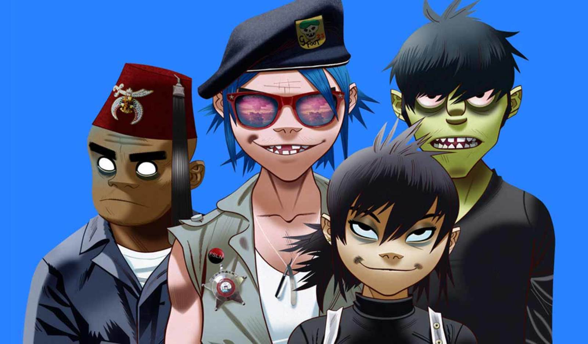

Gorillaz es mi grupo favorito porque está hecho por un artista que realmente ama la musica, su estilo es por lo general basado en el hip-hop, rap, rock alternativo y experimental. Siempre están inovando su musica y experimentan mucho con los generos. Tienen muchas colaboraciones con diferentes artistas como Bad Bunny lo que les da estilos distintos. Como adición esta es una banda virtual, lo que quiere decir que los que tocan los intrumentos y cantan son ficitcios.
